Selected work
Scratchboard, spray, plaster, charcoal, pastel, acrylic, colored pencil, welded steel.
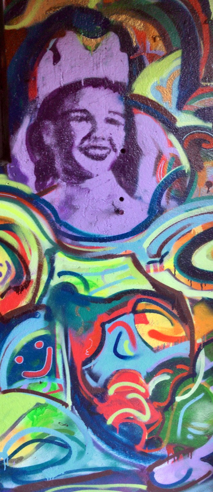
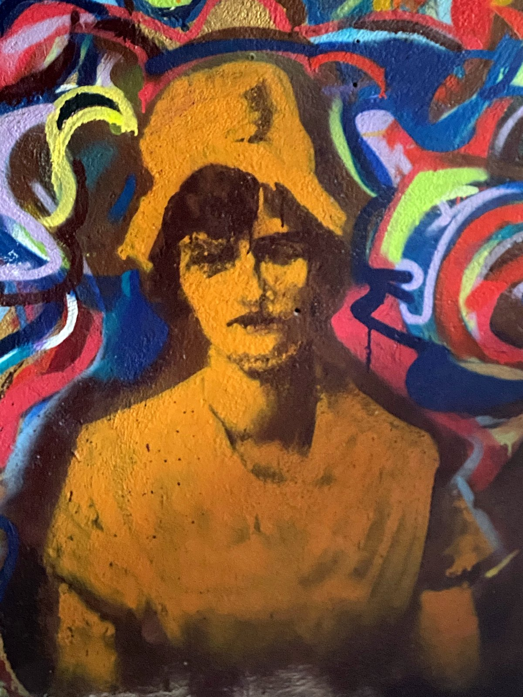
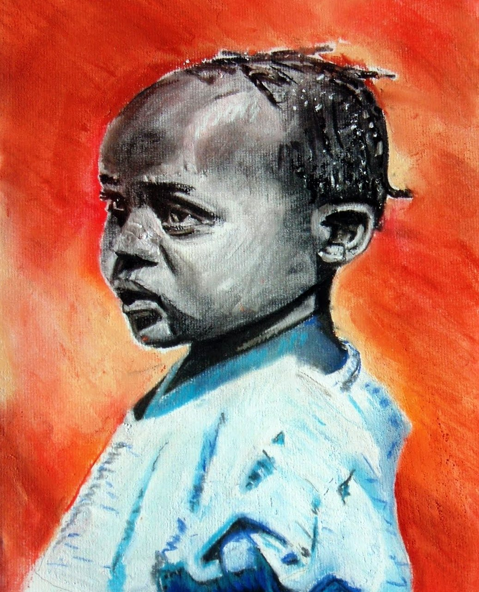
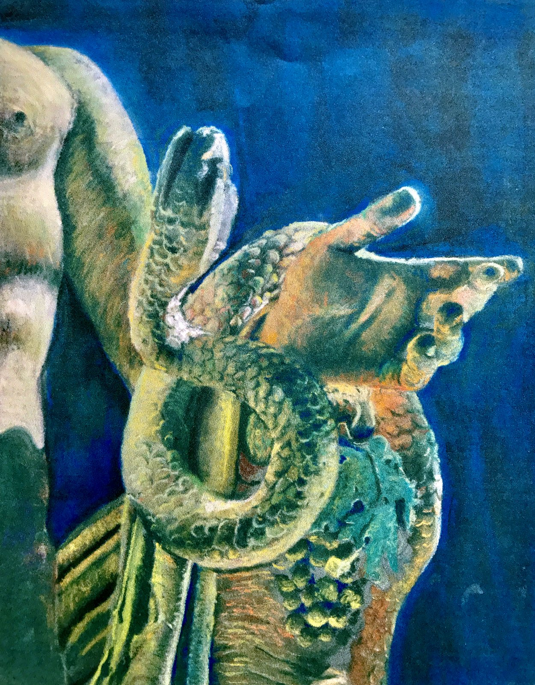
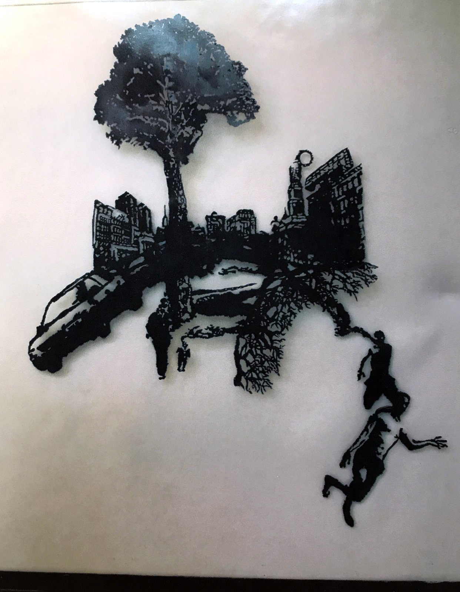
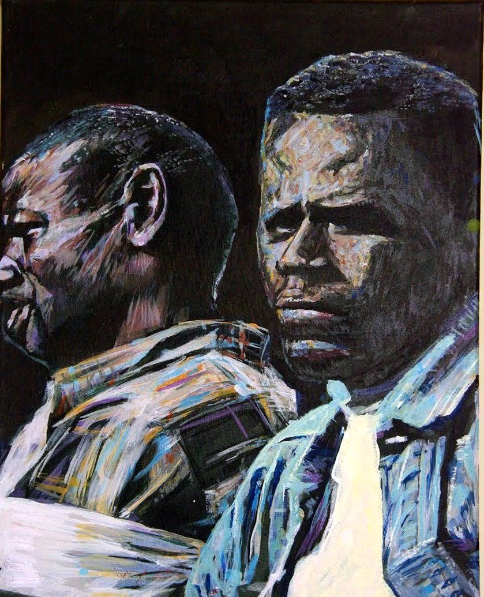
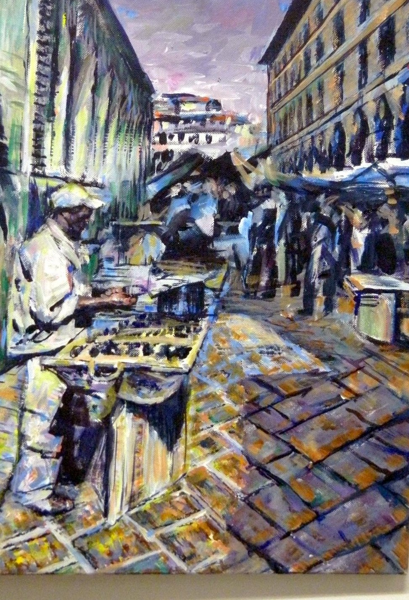
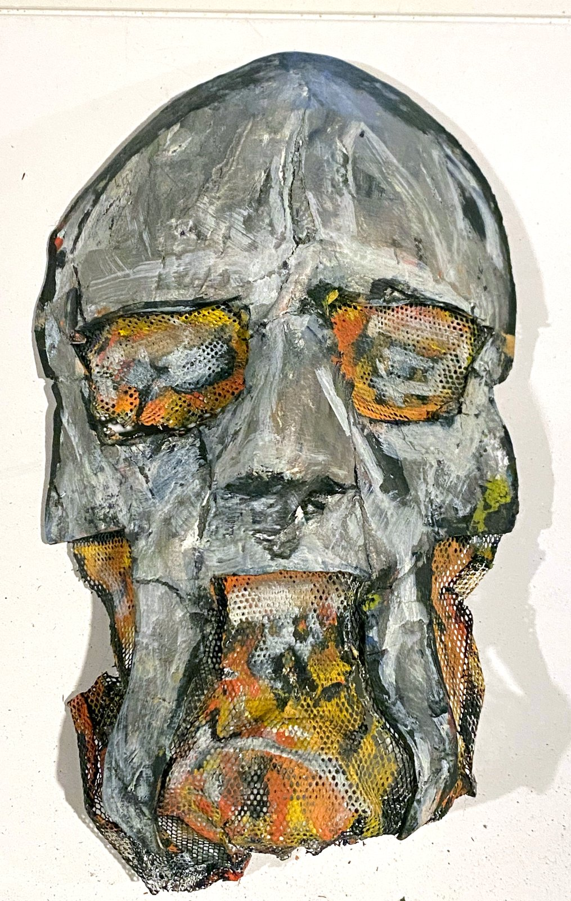
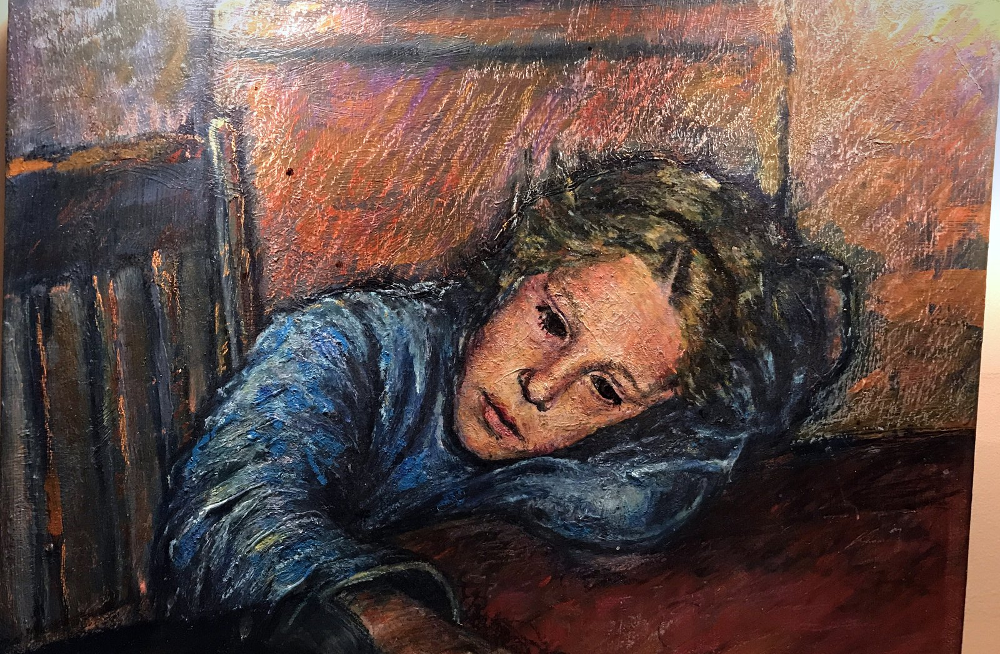
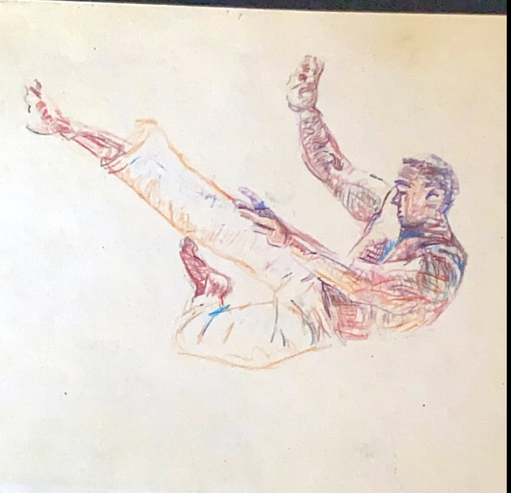
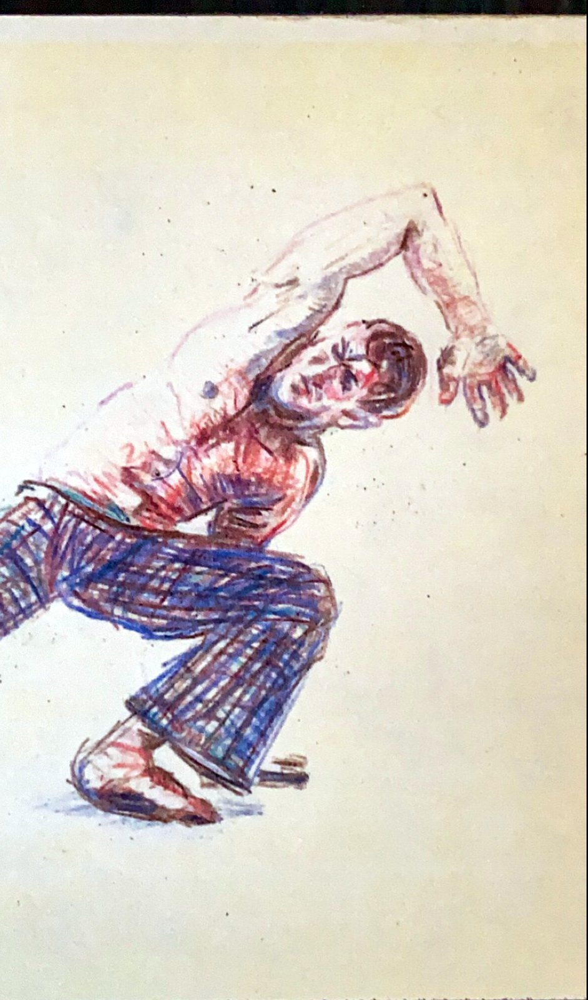
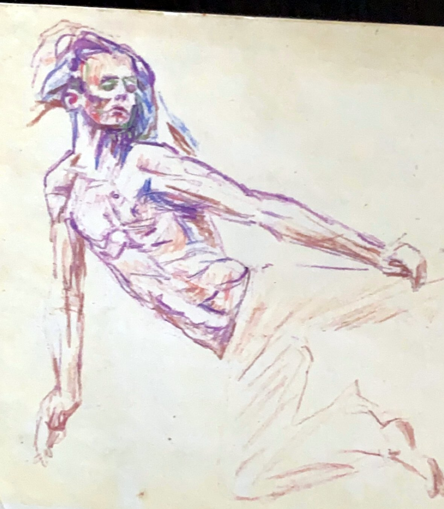
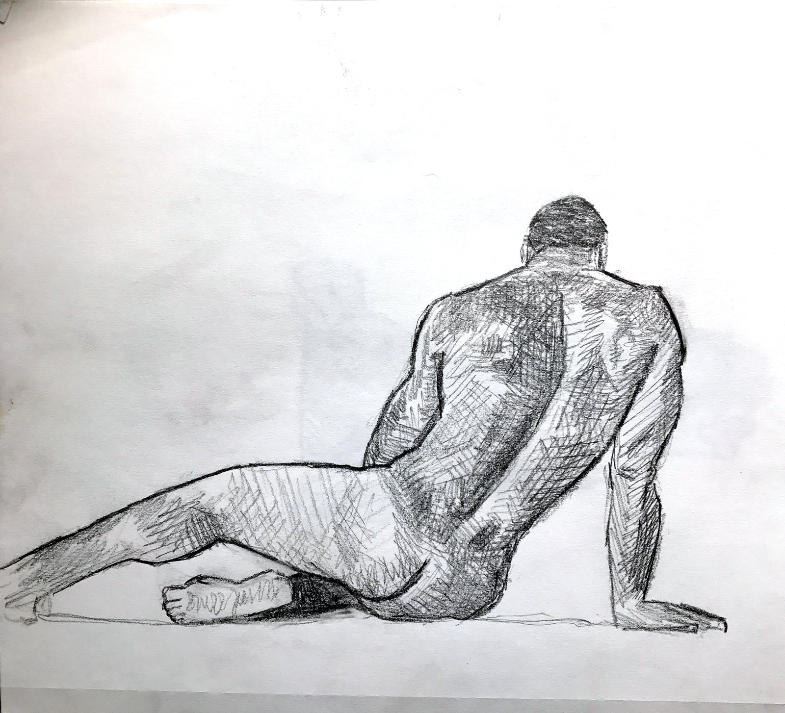
Projects
Selected software systems — browser-based 3D, civic AI workflows, spatial data interfaces, working apps, and interactive games.
atrium.earth
A digital sculpture museum in the browser — navigable rooms, heavy 3D models streamed in so the page never chokes.
atrium.earthworldbook.earth
An interactive map of the whole world in the browser — 239 countries shaded live across dozens of data layers, with migration and refugee flows drawn as moving currents.
worldbook.earthWPCNA
Civic site for a White Plains neighborhood council. Residents submit notices; an AI-assisted pipeline sorts them for review — a person always makes the call. Includes Ask White Plains, a Q&A assistant grounded in the site's own content.
View liveAd Arma
A turn-based strategy wargame on a hex grid, playable in the browser. I designed the rules and built the whole thing.
ad-arma.comSignal Atlas
A 3D look inside a neural network — how it's wired and what lights up as it works. You move through the model instead of reading charts.
Live demoWormhole
First-person transit through a wormhole throat — live in the browser, physics tunable mid-flight.
Live demoMesh Atlas
The catalog engine behind atrium.earth — indexes and streams large 3D scans so a museum's worth of sculpture loads smoothly in a browser.
HouseScan
An iPhone app that scans the outside of a house into a 3D model using the phone's LiDAR sensor, then exports a clean model.
SoundFind
An iPhone app that finds a misplaced Bluetooth device by reading its signal strength — warmer, colder, found.
About
I'm a mixed-media artist who builds software. Twenty years of painting, murals, figure work, and welded steel trained my eye for form, composition, and space. Software is the newest material.
For fifteen years I worked deliberately outside the conventional career track: earthquake relief in Haiti, teaching in West Africa, furniture fabrication upstate, and a steady independent studio practice.
Connecticut College — B.A., 2008
Tools I work in
Swift / SwiftUI · React · TypeScript · Python · Node
Archive
The longer record. Click anything to view.